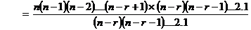
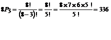
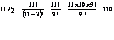
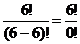
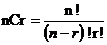
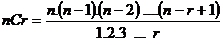
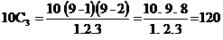
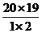

MATHS:: Lecture 16 :: PERMUTATION AND COMBINATION

PERMUTATION AND COMBINATION
Fundamental Counting Principle
If a first job can be done in m ways and a second job can be done in n ways then the total number of ways in which both the jobs can be done in succession is m x n.
For example, consider 3 cities Coimbatore, Chennai and Hyderabad. Assume that there are 3 routes (by road) from Coimbatore to Chennai and 4 routes from Chennai to Hyderabad. Then the total number of routes from Coimbatore to Hyderabad via Chennai is 3 x 4 =12. This can be explained as follows.
For every route from Coimbatore to Chennai there are 4 routes from Chennai to Hyderabad. Since there are 3 road routes from Coimbatore to Chennai, the total number of routes is 3 x 4 =12.
The above principle can be extended as follows. If there are n jobs and if there are mi ways in which the ith job can be done, then the total number of ways in which all the n jobs can be done in succession ( 1st job, 2nd job, 3rd job… nth job) is given by m1 x m2 x m3 …x mn .
Permutation
Permutation means arrangement of things. The word arrangement is used, if the order of things is considered. Let us assume that there are 3 plants P1, P2, P3. These 3 plants can be planted in the following 6 ways namely
P1 |
P2 |
P3 |
P1 |
P3 |
P2 |
P2 |
P1 |
P3 |
P2 |
P3 |
P1 |
P3 |
P1 |
P2 |
P3 |
P2 |
P1 |
Each arrangement is called a permutation. Thus there are 6 arrangements (permutations) of 3 plants taking all the 3 plants at a time. This we write as 3P3. Therefore 3P3 = 6. Suppose out of the 3 objects we choose only 2 objects and arrange them. How many arrangements are possible? For this consider 2 boxes as shown in figure.
I Box |
II Box |
Permutation
Since we want to arrange only two objects and we have totally 3 objects, the first box can be filled by any one of the 3 objects, (i.e.) the first box can be filled in 3 ways. After filling the first box we are left with only 2 objects and the second box can be filled by any one of these two objects. Therefore from Fundamental Counting Principle the total number of ways in which both the boxes can be filled is 3 x 2 =6. This we write as 3P2 = 6.
In general the number of permutations of n objects taking r objects at a time is denoted by nPr. Its value is given by

Note: 1
- nPn = n ! (b ) nP1= n. (c) nP0= 1.
Examples:
1. Evaluate 8P3
Solution:

2. Evaluate 11P2
Solution:

3. There are 6 varieties on brinjal, in how many ways these can be arranged in 6 plots which are in a line?
Solution
Six varieties of brinjal can be arranged in 6 plots in 6P6 ways.
6P6 =  = 6! [0! = 1]
= 6 x 5 x 4 x 3 x 2x1 = 720.
Therefore 6 varieties of brinjal can be arranged in 720 ways.
4. There are 5 varieties of roses and 2 varieties of jasmine to be arranged in a row, for a photograph. In how many ways can they be arranged, if
(i) all varieties of jasmine together
(ii)All varieties of jasmine are not together.
Solution
i) Since the 2 varieties of jasmine are inseparable, consider them as one single unit. This together with 5 varieties of roses make 6 units which can be arranged themselves in 6! ways.
In every one of these permutations, 2 varieties of jasmine can be rearranged among themselves in 2! ways.
Hence the total number of arrangements required
= 6! x 2! = 720 x 2 = 1440.
ii)The number of arrangements of all 7 varieties without any restrictions =7! = 5040
Number of arrangements in which all varieties of jasmine are together = 1440.
Therefore number of arrangements required = 5040 -1440 = 3600.
Combinatination
Combination means selection of things. The word selection is used, when the order of thing is immaterial. Let us consider 3 plant varieties V1, V2 & V3. In how many ways 2 varieties can be selected? The possible selections are
1) |
V1 |
& |
V2 |
2) |
V2 |
& |
V3 |
3) |
V1 |
& |
V3 |
Each such selection is known as a combination. There are 3 selections possible from a total of 3 objects taking 2 objects at a time and we write 3C2= 3.
In general the number of selections (Combinations) from a total of n objects taking r objects at a time is denoted by n Cr.
Combination
Probability using Combinations
We know that
n Pr = nCr x r!
(or) ------------(1)
But we know
Sub (2) in (1) we get

Another formula for nCr
We know that nPr = n. (n-1). (n-2)…(n-r+1)
\ 
Example
1. Find the value of 10C3.
Solution:

Note -1
- nC0 = 1
- nC1 = n
- nCn = 1
d) nCr = nCn-r
Examples
1. Find the value of 20C18
Solution
We have 20C18 = 20C20-18=20C2 = =190
2. How many ways can 4 prizes be given away to 3 boys, if each boy is eligible for all the prizes?
Solution
Any one prize can be given to any one of the 3 boys and hence there are 3 ways of distributing each prize.
Hence, the 4 prizes can be distributed in 34= 81 ways.
3. A team of 8 students goes on an excursion, in two cars, of which one can accommodate 5 and the other only 4. In how many ways can they travel?
Solution
There are 8 students and the maximum number of students can accommodate in two cars together is 9.
We may divide the 8 students as follows
Case I: 5 students in the first car and 3 in the second
Case II: 4 students in the first car and 4 in the second
In Case I: 8 students are divided into groups of 5 and 3 in 8C3 ways.
Similarly, in Case II: 8 students are divided into two groups of 4 and 4 in 8C4 ways.
Therefore, the total number of ways in which 8 students can travel is 8C3 + 8C4 = 56 + 70 = 126.
4. How many words of 4 consonants and 3 vowels can be made from 12 consonants and 4 vowels, if all the letters are different?
Solution
4 consonants out of 12 can be selected in 12C4 ways.
3 vowels can be selected in 4C3 ways.
Therefore, total number of groups each containing 4 consonants and 3 vowels
= 12C4 * 4C3
Each group contains 7 letters, which can be arranging in 7! ways.
Therefore required number of words = 124 * 4C3 * 7!
| Download this lecture as PDF here |